This product RGB Matrix P3.0-64 x 64 is on-board 4096 full-color display LEDs with 3mm pitch, which supports the use of Raspberry Pi, Raspberry Pi Pico, Arduino Mega, ESP32 developing board. The product is provided with open development resources, suitable for the electronic makers and the related learners to learn or DIY.
Features
On-board 64 x 64 = 4096 full-color display LEDs
3mm pitch, displaying text, animation and colorful image
Onboard two HUB75 headers, respectively for signal input and output. It can be cascaded multi-screen
Providing open development resources and tutorials for the use of Raspberry Pi, Raspberry Pi Pico, Arduino Mega, ESP32 development boards
Specifications
Pixels
64 x 64
Pitch
3mm
Pixel Form
1R1G1B
Viewing Angle
≥160°
Header
HUB75
Control Type
synchronization
Driving
1/32 scan
Power Supply
5V/4A
Power Port
VH4 header input
Dimensions
192mm(Length) x 192mm(Width) x 15mm(height)
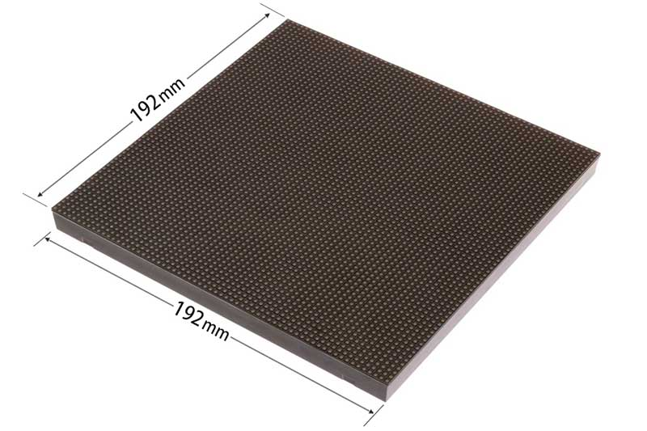
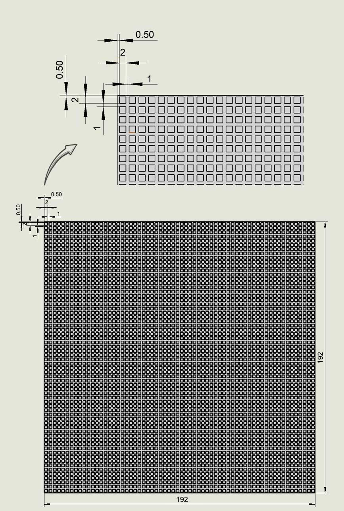
Usage
The demo codes of some platforms can directly display the image file, but some platforms need to convert the image data into a hexadecimal array format first, and then copy it to the image data storage array in the demo codes file, so that users can display their own image content according to their needs. Taking the Arduino Mega platform demo codes as an example, if you need to convert and display the image, you can refer to the following link: RGB Dot Matrix Image Conversion Tutorial
Instructions of Hardware Interface Configuration
This product is mainly used with the main-board of Raspberry Pi, with HUB75 for signal input and output of RGB LED Matrix Panel. The connector definitions are in the following figure:
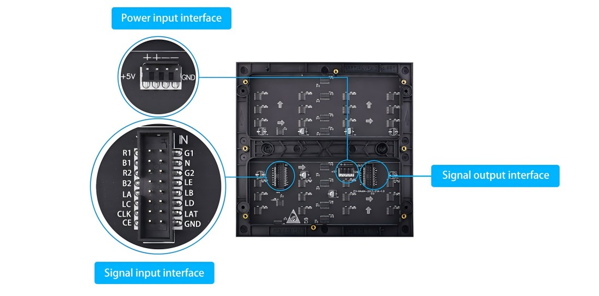
Figure 2-1
Usage of Raspberry Pi
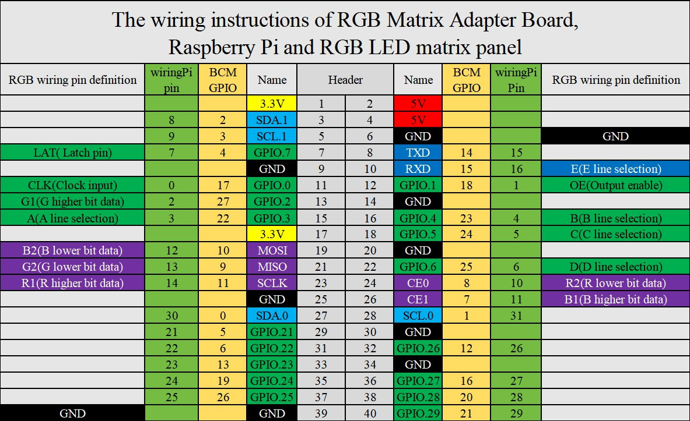
Figure 2-2
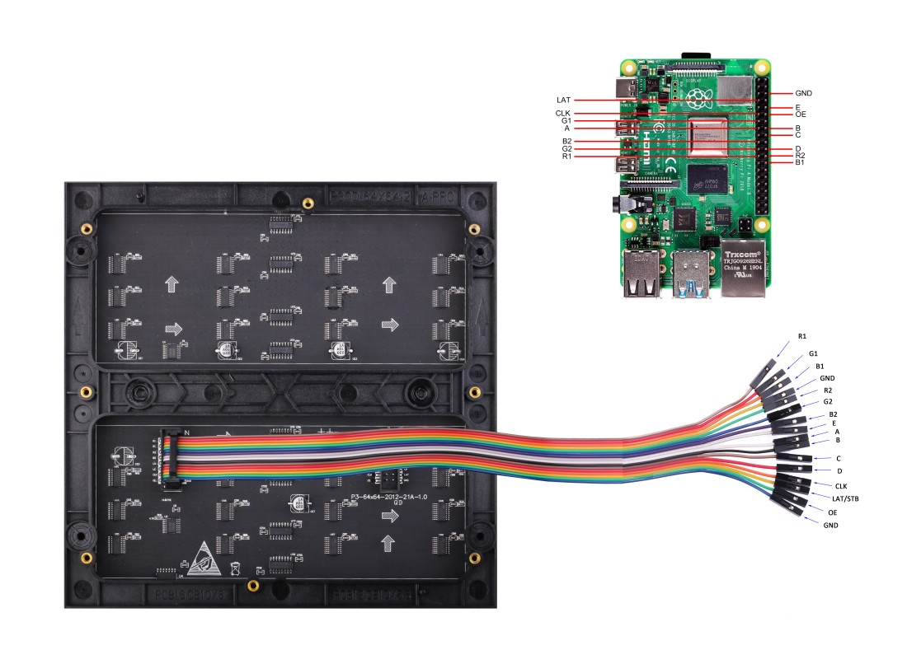
Definitions of Raspberry Pi and wiring pin of signal input connector:
Mark
Description of Pin
BCM number
Pins Function
Mark
Description of Pin
BCM number
Pins Function
R1
R higher bit data
11
SCLK
G1
G higher bit data
27
P2
B1
B higher bit data
7
CE1
GND
Ground
GND
GND
R2
R lower bit data
8
CE0
G2
G lower bit data
9
MISO
B2
B lower bit data
10
MOSI
E
E line selection
15
RXD
A
A line selection
22
P3
B
B line selection
23
P4
C
C line selection
24
P5
D
D line selection
25
P6
CLK
clock input
17
P0
LAT
latch pin
4
P7
OE
output enable
18
P1
GND
Ground
GND
GND
Table2-1
This display uses the open source code on github to demonstrate. Please access the Raspberry Pi terminal, and then enter the following commands in turn:
sudo git clone https://github.com/hzeller/rpi-rgb-led-matrix
cd rpi-rgb-led-matrix
sudo make
cd examples-api-use
sudo ./demo -D 9 --led-no-hardware-pulse --led-rows=64 --led-cols=64
For more details about the demo, please read the contents of the README.md file carefully.
Cautions of demo:
1. Turn off onboard audio.
Please modify the content of /boot/config.txt into dtparam=audio=off, because the on-board audio and the timing circuitry required by RGB-Matrix cannot be run simultaneously.
2. Please do not run any programs that run in parallel with the GPIO pins.
3. Disable the 1-wire interface:raspi-config -> Interface Options -> 1-Wire
4. Add the isolcpus=3 statement at the end of the /boot/cmdline.txt file, separated by spaces
Usage of Demo for Raspberry Pi Pico
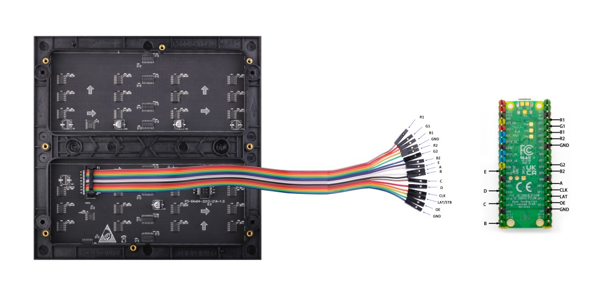
The wiring pins definitions of signal input for Pico/Pico 2 and RGB LED Matrix Panel are as follows (For versions V3.8 and earlier of the RGB Matrix Adapter Board):
Label
Pins Description
Pico Pins
Label
Pins Description
Pico Pins
R1
R higher bit data
GP02
G1
G higher bit data
GP03
B1
B higher bit data
GP04
GND
Ground
GND
R2
R lower bit data
GP05
G2
G lower bit data
GP08
B2
B lower bit data
GP09
E
E line selection
GP22
A
A line selection
GP10
B
B line selection
GP16
C
C line selection
GP18
D
D line selection
GP20
CLK
clock input
GP11
LAT
latch pin
GP12
OE
output enable
GP13
GND
Ground
GND
Table 2-2
The wiring pins definitions of signal input for Pico/Pico 2 and RGB LED Matrix Panel are as follows (For version V3.9 or latest of the RGB Matrix Adapter Board):
Label
Pins Description
Pico Pins
Label
Pins Description
Pico Pins
R1
R higher bit data
GP02
G1
G higher bit data
GP03
B1
B higher bit data
GP04
GND
Ground
GND
R2
R lower bit data
GP05
G2
G lower bit data
GP06
B2
B lower bit data
GP07
E
E line selection
GP12
A
A line selection
GP08
B
B line selection
GP09
C
C line selection
GP10
D
D line selection
GP11
CLK
clock input
GP13
LAT
latch pin
GP14
OE
output enable
GP15
GND
Ground
GND
Table 2-3
Usage of Demo:
We provide two demonstration codes: one is based on bit-bang, which drives the display by having the CPU execute software logic to directly control the level switching of GPIO pins and simulate the complete timing required by the HUB75 protocol; the other is based on PIO, which utilizes the PIO (Programmable I/O) state machine of the RP2040 chip to directly generate signals conforming to the HUB75 protocol specifications with hardware-level timing to drive the display.
The bit-bang based version is suitable for rapid prototyping and helps beginners understand basic principles and get started quickly.
The PIO-based version is suitable for projects requiring efficient resource management and is an ideal choice for scenarios where PIO functionality needs to be utilized to optimize display performance.
After wiring the Pico and the display, open the Thonny Python IDE, access the Pico-RGB Matrix LED_64x64 folder in the demo codes in the "File" window (View -> File), and upload all the files and folders in the folder to the Pico. Then double-click to open the main.py file, and click the "Run" icon in the menu to run the current code.
Usage of Demo for Arduino Mega
The wiring pins definitions of signal input for Arduino mega and RGB LED Matrix Panel as following:
Label
Pins Description
Arduino mega Pins
Label
Pins Description
Arduino mega Pins
R1
R higher bit data
D24
G1
G higher bit data
D25
B1
B higher bit data
D26
GND
Ground
GND
R2
R lower bit data
D27
G2
G lower bit data
D28
B2
B lower bit data
D29
E
E line selection
A4
A
A line selection
A0
B
B line selection
A1
C
C line selection
A2
D
D line selection
A3
CLK
clock input
D11
LAT
latch pin
D10
OE
output enable
D9
GND
Ground
GND
Table2-4
Usage of Demo：
After wiring the power cable to the display panel and connecting the signal cable according to Table 2-3, access the Arduino_Mega_RGB_Matrix_64x64 folder and double-click to open the Arduino_Mega_RGB_Matrix_64x64.ino file. Then click the Verify button, and then click the Upload button. The demo code realizes the function of displaying text and pictures in a loop.
Usage of Demo for ESP32
The wiring pins definitions of signal input for ESP32 and RGB LED Matrix Panel as following:
Label
Pins Description
ESP32 Pins
Label
Pins Description
ESP32 Pins
R1
R higher bit data
IO25
G1
G higher bit data
IO26
B1
B higher bit data
IO27
GND
Ground
GND
R2
R lower bit data
IO14
G2
G lower bit data
IO12
B2
B lower bit data
IO13
E
E line selection
IO32
A
A line selection
IO23
B
B line selection
IO22
C
C line selection
IO5
D
D line selection
IO17
CLK
clock input
IO16
LAT
latch pin
IO4
OE
output enable
IO15
GND
Ground
GND
Table2-5
Usage of Demo：
The Arduino IDE version used in this demo is arduino-ide_2.3.2_Windows_64bit
1.Download and unzip the ESP32_Packages folder (the unzipped esp32 folder will have "hardware" and "tools" subfolders), copy the unzipped esp32 folder to the packages under the installation directory of Arduino IDE, such as C:\Users\Admin\AppData\Local\Arduino15\packages (Admin is the user name of my computer, which needs to be replaced according to the actual user name of your computer), as shown in the figure below:
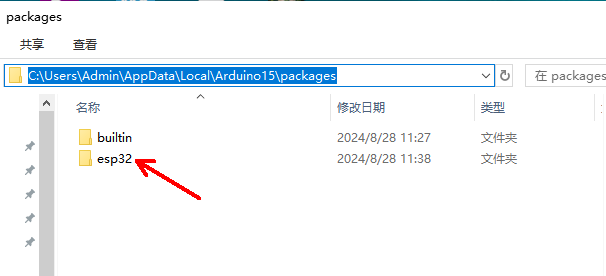
Figure 2-3
2. Copy the files in the downloaded demo codes\ESP32\libraries folder to the libraries in the installation directory of Arduino IDE; for example, the path on my computer is C:\Users\Admin\Documents\Arduino\libraries ('Admin' is the user name of my computer, which needs to be replaced according to the actual user name of your computer);
3. After connecting the power cable to the screen and connecting the signal cable according to Table 2-4, enter the ESP32 folder and you will find 4 subfolders: SimpleTestShapes, PatternPlasma, BouncingSquares, AurroraDemo, where SimpleTestShapes is for basic shape display, PatternPlasma is for plasma pattern display, BouncingSquares is for bouncing square display, and AurroraDemo is for animation effect display;
4. Select the appropriate board and port according to the ESP32 module model you are using, as shown in Figure 2-4 below:
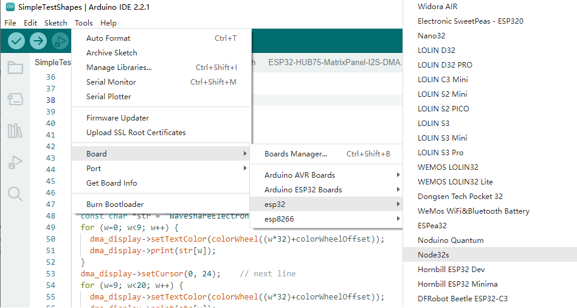
Figure 2-4
5.Then click the Verify button, and then click the Upload button. The demo code implements the function of displaying text and pictures in a loop.
Daisy-Chaining Multiple RGB Matrix Screens
When daisy-chaining multiple RGB Matrix Screens (e.g., Screen A and Screen B), connect them as follows:
MCU to Screen A: Connect the MCU's signal interface to Screen A's Signal Input connector using a 16-pin gray ribbon cable.
(Refer to Table 2-2 for Pico platform or Table 2-4 for ESP32 platform for pin definitions.)
Screen A to Screen B: Connect Screen A's Signal Output connector to Screen B's Signal Input connector using another 16-pin gray ribbon cable.
Power Supply: Ensure both RGB Matrix Screens (Screen A and Screen B) are simultaneously supplied with 5V power.
A wiring diagram illustrating this connection method is shown below:
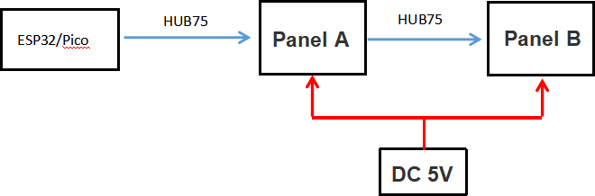
Figure 2-5
Note: Please ensure all cable connections are secure and strictly follow the steps above, as well as the relevant pin definition tables, to avoid device damage or functional anomalies.
Image Processing for RGB Matrix Screens
Here's a guide on preparing and displaying images on your RGB Matrix LED screens for both Pico and ESP32 platforms.
Image Preparation
Prepare an RGB888 (24-bit depth) image with a resolution of 128x64 pixels. The image format can be BMP.
Pico Platform
Upload the image to your Raspberry Pi Pico.
In the main.py file of your Pico-RGB Matrix LED_64x64 project, change line 13 to:
unit_width = 128
And change line 132 " self.image = 'wales_128x64.bmp'" to the file name of the picture you uploaded. Finally, use the "RGB.test(1)" statement to test the effect of dual-screen cascading.
ESP32 Platform
The ESP32 platform's example code can't directly process images. You'll need to use the Image2Lcd software to convert your image into a data array. Refer to the RGB Dot Matrix Image Conversion Tutorial for instructions on using the software.
Since your image resolution is 128x64, you'll need to set the "Maximum Width" and "Maximum Height" in Image2Lcd to "128" and "64" respectively. This will generate a "xxx.c" image data file, which contains a 16384-byte array.
After generating the file, copy its entire content and paste it at the end of the bit_bmp.h file. Remember to modify the array's type definition as shown in the red box in Figure 2-6 (using Pikachu_128x64 as an example array name; this name will vary based on your image file name).
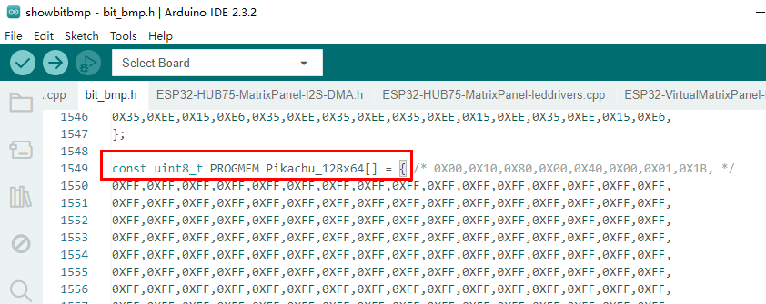
Figure 2-6
As shown in Figure 2-7 below, line 11 of the showbitmap.ino file in the code already defines the use of two matrix panels for splicing. Therefore, this line is defined as #define PANEL_CHAIN 2.
#define PANEL_CHAIN 2 // Line 11 in showbitmap.ino
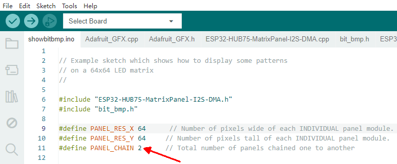
Figure 2-7
Next, you'll need to reference the image data array at the end of the showbitmap.ino file, as shown in Figure 2-8 below. After doing so, verify and upload the code to your ESP32 board.
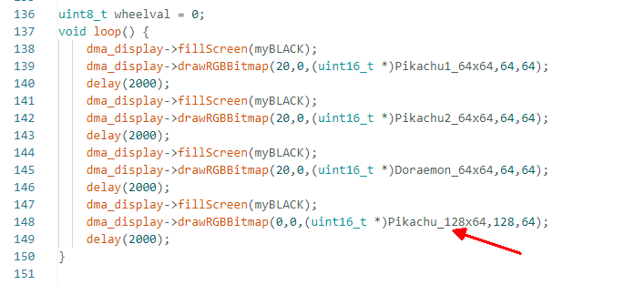
Figure 2-8
Currently, we only provide example codes for dual-screen cascading of Raspberry Pi Pico and ESP32 platforms.
For cascading 4 screens on ESP32 platform, please refer to the tutorial: 4 screens on ESP32